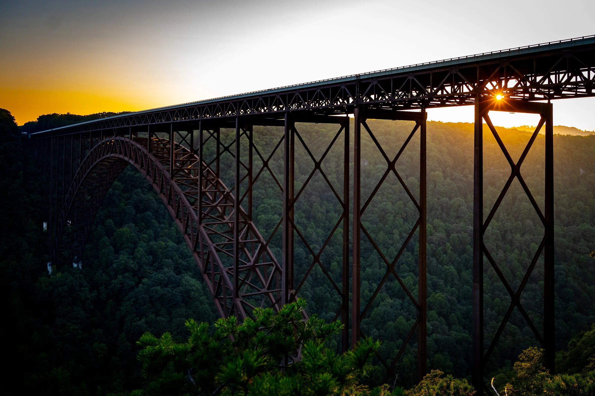
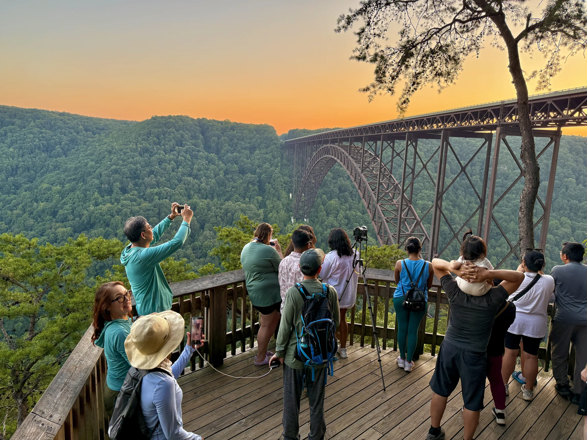

Leave home
12003 Holly Leaf CtGreat Falls, VA 22066
Load up, settle in, and point west toward the Blue Ridge.
Open in Maps ↗
August 1–2, 2026
Two days. One wild river.
A full Appalachian weekend.
The itinerary
A road-trip itinerary from Great Falls, Virginia to one of America’s great wild places. Raft. Hike. Eat well. Watch the light go.
New River Gorge was redesignated a national park and preserve in 2020, making it one of the newest additions to the national park system. The weekend layers roadside fun, Appalachian overlooks, an iconic mill, whitewater, and the changing moods of the bridge.
Leave room in the schedule for the gorge to surprise you.
From a famous roadside brisket stop to the rim of the New River Gorge, day one moves from playful to cinematic.
Load up, settle in, and point west toward the Blue Ridge.
Open in Maps ↗Make lunch part of the road-trip ritual: try the famous chopped brisket, stretch your legs, and experience a travel center that makes an ordinary fuel stop feel like an attraction.
Field challenge: try the largest restroom you’ve ever seen.
Open in Maps ↗Follow the rim from the Main Overlook toward Turkey Spur for broad views into the deepest part of the gorge. The official NPS route is 1.6 miles each way—3.2 miles round trip—with several short, steeper hills near Turkey Spur.
The fully operable Glade Creek Grist Mill is a working replica of the earlier Cooper’s Mill and one of West Virginia’s most photographed landmarks.
Our honest take: the park itself feels a little overrated, but the mill is famous. We can stop if anyone wants to see it.

A pause for the view.
Breathe deep. You’re here.
Drop bags at the resort on the rim of the gorge. The operator’s official contact page also lists the same property as 219 Chestnutburg Road.
The original Fayetteville location is an easy, casual group dinner near the park: specialty pizzas, salads, and craft beer. Saturday hours are currently listed as 11:00 AM–10:00 PM.
Eat well “The natural choice for lunch or dinner, right on the doorstep of New River Gorge.” — Pies & Pints
Walk the overlooks as the bridge turns bronze. There are no full hiking trails starting at the visitor center, but the boardwalk and overlook paths make an excellent short walk. The upper deck is accessible; the lower overlook requires descending 178 steps.
Keep the Milky Way plan flexible. On August 1, sunset is 8:33 PM, civil twilight ends around 9:02 PM, and true astronomical darkness arrives around 10:16 PM. A 93%-illuminated moon rises at 10:09 PM, so this will be a bright, moonlit night with only a narrow dark-sky window.
Sun & moon details ↗Sunday · August 2
The bridge appears first through dawn fog. Then the day drops from the rim to the river itself—paddles up, lunch on shore, and home by night.
Return to Canyon Rim while the gorge is quiet. Sunrise is around 6:28 AM; arrive before it to watch fog move through and below the steel arch.
Canyon Rim Visitor CenterThe rafting base is a short walk from the lodge. Confirm the exact check-in point, trip section, waiver status, and arrival buffer with Adventures on the Gorge before departure. Lower New River trips are currently listed for ages 12+.
Rafting operator ↗Step ashore and refuel. Lunch is provided by the rafting company—one of those simple meals that tastes better after a morning in whitewater.
Dry layers on, gear loaded, and the gorge in the rearview.
Choose the stop based on traffic, timing, and how hungry the group is.
12003 Holly Leaf Ct · Great Falls, VA 22066
Google’s Routes and Static Maps APIs trace the actual driving route. Use the filters to see the full weekend or focus on either day.
Small things now make for a smoother day.
Wear sturdy water shoes, carry quick-dry clothing, sun protection, and a change of clothes for the ride home.
Recheck the 8:00 AM meeting point, waiver, age requirements, and what the operator provides before departure.
Appalachian conditions change quickly. At the first sound of thunder, leave overlooks and water and seek shelter.
NPS warns that third-party navigation can misroute visitors onto rough roads. Use the visitor-center addresses in this guide.
Moonrise 10:09 PM · 93% illuminated · Milky Way visibility limited
Verified trip resources